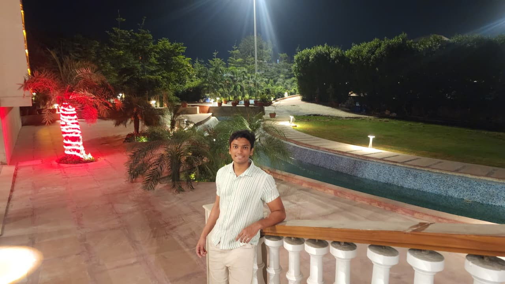
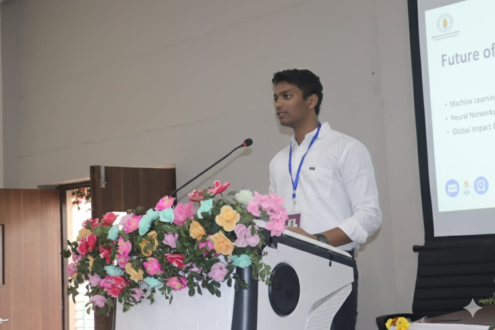
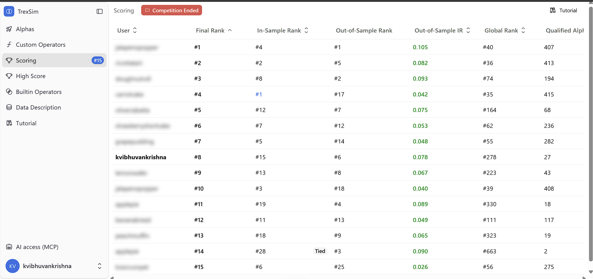
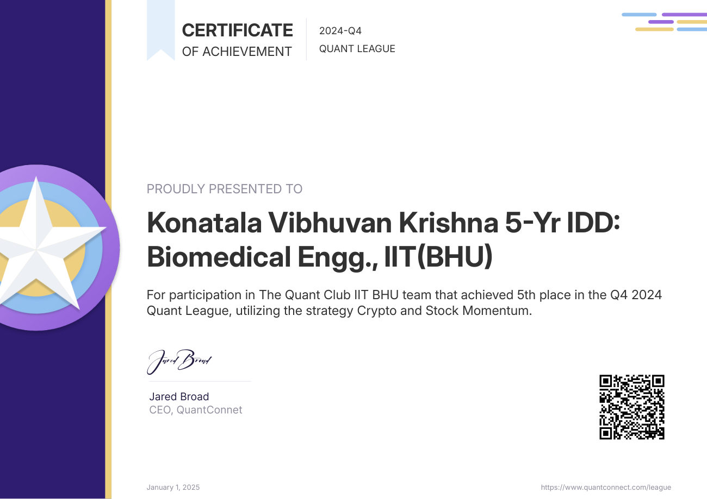
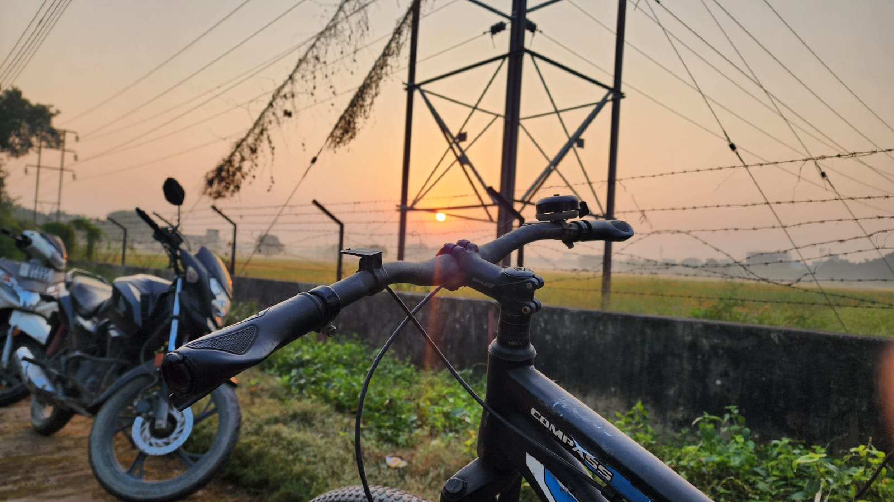
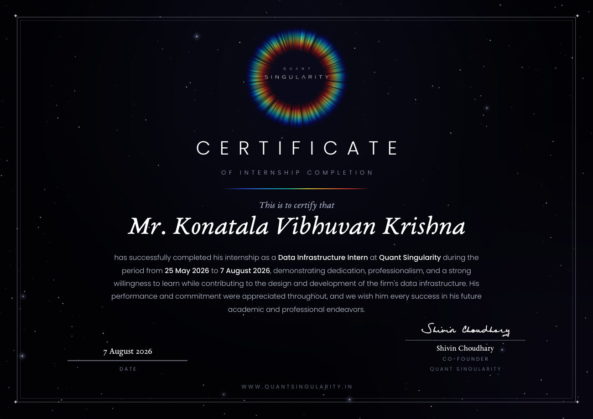
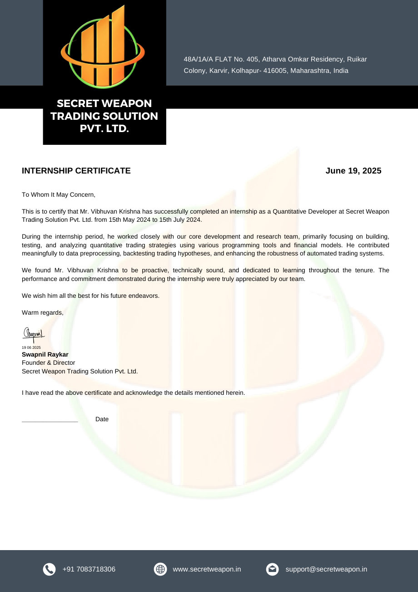
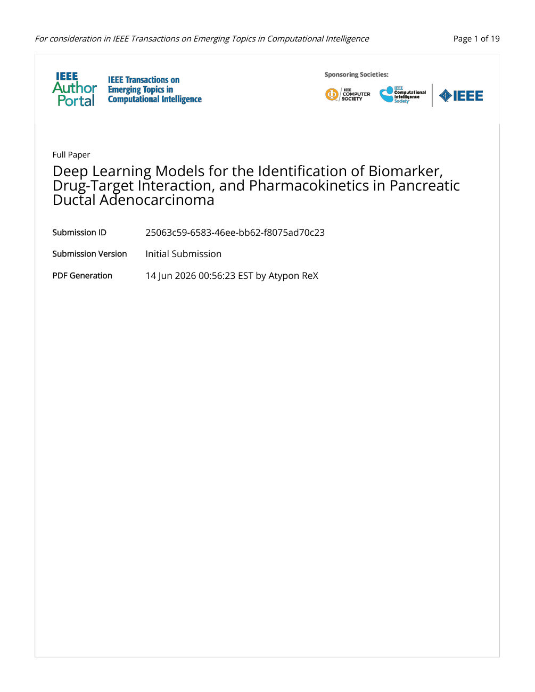
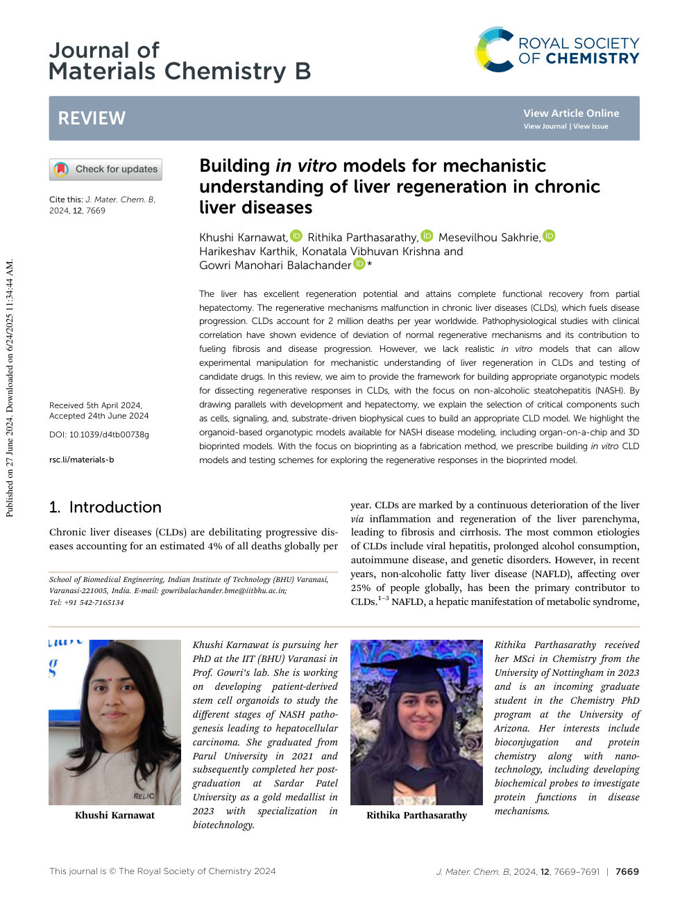

Cross-sectional equities
AlphaForge
Market-neutral features, walk-forward and purged validation, IC and Rank IC analysis, neutralization, and multiple-testing controls.
Explore project ↗Quantitative Researcher · Systematic Trader · IIT (BHU)

I study market-neutral alphas, regime shifts, and systematic trading strategies, testing ideas against data and out-of-sample evidence.

I am an IDD Biomedical Engineering student at IIT (BHU), Varanasi, focused on quantitative research. My work spans cross-sectional equities, options and volatility, prediction markets, and regime-aware risk management.
I care about the full research process: asking a testable question, building signals, controlling bias, and understanding why a result holds out of sample.
Research results and the underlying records, shown together.

Hypothesis-driven cross-sectional and market-neutral alpha research across momentum, reversal, VWAP dislocations, fundamental signals, and regime detection.
Market-neutral features, walk-forward and purged validation, IC and Rank IC analysis, neutralization, and multiple-testing controls.
Explore project ↗Studying whether Fed-rate probability shocks predict equity returns or realized volatility; mean IC ≈ 0.037 for VIX.
Explore project ↗Iterative strategy research with fitness scoring, drawdown controls, and walk-forward testing.
Explore project ↗As part of the Quant Club IIT BHU team, I developed and adapted momentum strategies for changing market conditions. Our team placed 5th in Q4 2024.
The QuantConnect certificate sits beside the result so the achievement is easy to inspect.
Open certificate ↗

Quant research first, with the infrastructure experience to support reliable testing and trading.

Researching HMMs, BOCPD, and regime-aware exposure under Prof. Shashi Jain. Earlier, built options data and pricing infrastructure for research and trading.
View internship certificate ↗
Worked with the development and research team on quantitative strategy testing, data preparation, backtesting, and trading systems.
View internship certificate ↗Biomedical research papers and authorship records from my academic work.

Research on biomarkers, drug-target interaction, and pharmacokinetics in pancreatic ductal adenocarcinoma.
Read paper ↗ Authorship record ↗
Co-authored a published review on models for understanding liver regeneration in chronic liver diseases.
Read publication ↗Competition, sport, speaking, and early academic interests in one visual record.
Python, C++, SQL, Polars, NumPy, Numba, VectorBT, and QuantStats. Statistical research with hypothesis testing, cross-sectional regression, IC and Rank IC, alpha decay, factor neutralization, and purged cross-validation.
My background in probability, financial time series, and machine learning supports a practical approach to systematic strategies.
I welcome conversations about alpha research, systematic trading, market regimes, and quantitative research roles.